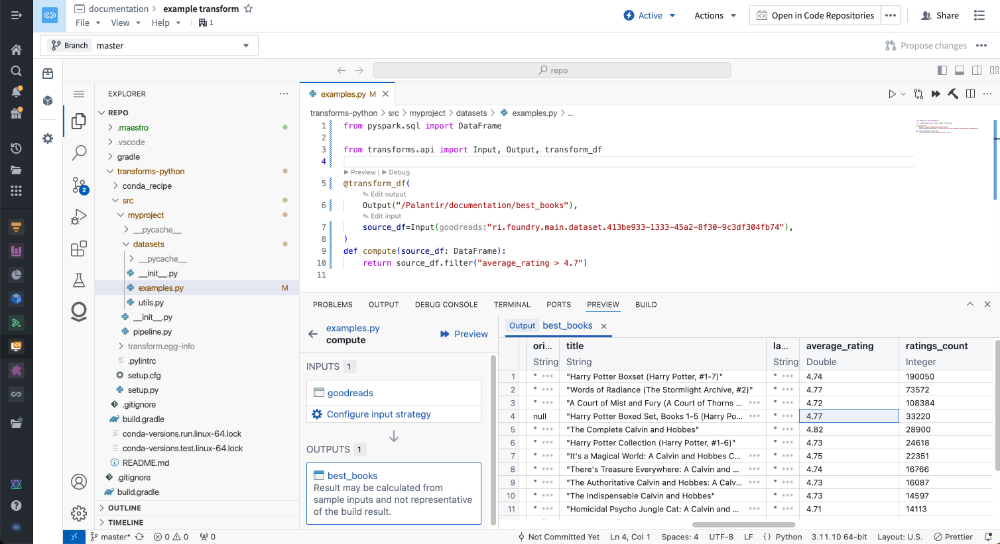
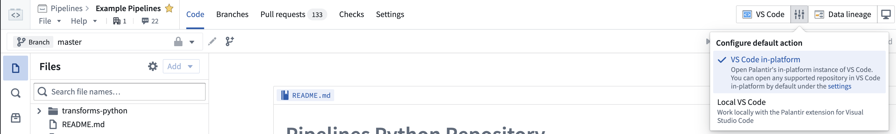

:::callout{theme="neutral"} VS Code workspaces and the Palantir extension for Visual Studio Code are not affiliated with or endorsed by Microsoft. :::
The Palantir extension for Visual Studio Code aims to integrate many features you see in Code Repositories with VS Code. The extension's features are currently focused on Python transforms.
The Palantir extension for VS Code can be used either as part of a VS Code workspace in the Palantir platform, or as a downloadable extension for your local version of VS Code.
For guidance on choosing between these options, review our documentation on choosing between local development and VS Code workspaces.
The Palantir extension is available by default in VS Code workspaces. Review the VS Code workspaces documentation to learn more.

The Palantir extension can also be used in local development, and is the endorsed method for local development for Python transforms.
:::callout{theme="warning"}
You may not have the required permissions to work with the extension locally even if it is available on your enrollment. A platform administrator is required to enable local extension use, and they can grant user access through Control Panel settings.
In order to preview locally, users must have the above Control Panel settings enabled and have downloader permissions on the preview inputs, which are s3-proxy:datasets-read and api:datasets-read. These are privileged operations that allow users to download entire datasets locally, and should be granted with care. In cases where users cannot be granted this permission, the VS Code developer experience is still available through Code Workspaces, which guarantee strict data control.
:::
Note: You only need to download the extension if you have never installed it before.

:::callout{theme="warning"} The Palantir extension for Visual Studio code is not yet available in the Visual Studio Code Marketplace. You can only download the extension from the Palantir platform at this time. :::
Install the extension by performing one of the following steps:
Extensions: Install from VSIX...Once the Palantir extension is installed, you should see the Palantir logo on the VS Code sidebar. From the sidebar, you can do one of the following:
Review other features of the Palantir extension for Visual Studio Code.